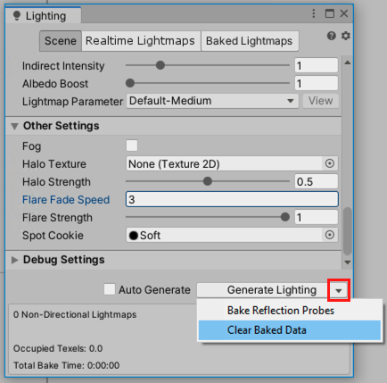

升级到 Unity 2020 LTS
注意：按照版本顺序遵循此部分中的建议。例如，如果需要将项目从 2018 升级到 2020，请在阅读 2020 升级指南之前阅读 2019 升级指南，了解是否需要进行任何更改。
本页面列出了从 2019 版本升级到 2020 LTS 时在 Unity 2020 LTS 中可能对现有项目造成影响的更改。
请注意，2020LTS 也称为 2020.3。
页面大纲
- 所有网格顶点都进行变换以实现更好的 UV 展开
- 所有资源包哈希都不同，因此会构建所有包
- 多玩家 HLAPI 包不会在项目升级中自动安装
- 使用渐进光照贴图改进了 LOD 烘焙
- Adaptive Performance 重要更改
- Xcode 项目生成
- 粒子系统力场 (Particle System Force Field)
- 对 UGUI Graphic 类的更改
- 设置代码优化以继续使用代码覆盖率
- AR/VR 平台支持
所有网格顶点都进行变换以实现更好的 UV 展开
Unity 可能会更改导入到项目中的 3D 对象的网格 UV。
Unity 会变换所有导入的网格顶点的位置以便采用 Unity 单位自动缩放。
从 Unity 2020.1 开始，如果启用了 Generate Lightmap UVs，则 Unity 会使用变换的网格顶点生成光照贴图 UV。在 Unity 2020.1 之前，Unity 会在进行自动位置变换之前，使用导入的原始网格顶点位置生成光照贴图 UV 贴图。
顶点变换后生成的 UV 对所导入对象的原始形状和缩放更准确。
所有资源包哈希都不同，因此会构建所有包
从 Unity 2020.1 开始，Unity 会为项目中的所有资源包生成不同的哈希值。这可确保构建所有包，包括具有相同内容但可加载路径不同的包。
多玩家 HLAPI 包不会在项目升级中自动安装
从 Unity 2020.1 开始，如果要升级的项目具有使用多玩家 HLAPI 的脚本，请从 Package Manager 安装多玩家 HLAPI 包。
从 Unity 2019.1 到 2019.4，升级在 Unity 2018.4 或更早版本中创建的项目时，Unity 会自动安装多玩家 HLAPI 包。
使用渐进光照贴图改进了 LOD 烘焙
Unity 的渐进光照贴图由 CPU 和 GPU 光照贴图组成。
从 Unity 2020.1 开始，GPU 光照贴图支持细节级别 (LOD) 烘焙。
CPU 光照贴图使用相同的烘焙算法，这使 Unity 可以充分使用所有可用的 CPU 核心，以便在 LOD 值高于 0 的场景中加快烘焙时间。
若要在场景中升级 LOD，请清除烘焙光照贴图，然后重新生成它。为此需要执行以下操作：
1.在 Unity 编辑器中，打开 Window > Rendering > Lighting Settings。
2.在 Debug Settings 中，单击 Generate Lighting 按钮上的下拉菜单，然后单击 Clear Baked Data。

3.单击 Generate Lighting。
Adaptive Performance 重要更改
要将 Adaptive Performance 从 1.0 更新到 2.0，请参阅 Adaptive Performance 升级指南。
Xcode 项目生成
MacOS 独立 Xcode 项目构建路径选择已更改。现在必须提供所需目录的路径，并在目标目录中创建 .xcodeproj 和随附文件。 MacOS 构建文件夹不能位于项目目录中。 请参阅手册页面了解 Xcode 项目结构。
粒子系统力场 (Particle System Force Field)
为了确保力场属性一致的行为，Unity 现在使用 30fps 的参考帧率作为模拟的基础。 如果您的应用使用不同的帧率，此更改可能会影响以下力场属性：
- Gravity
- Rotation
- Vector Fields
如果这些设置的行为与早期 Unity 版本不同，请调整它们的值。
对 UGUI Graphic 类的更改
UnityEngine.UI.Graphic 不再为 CanvasRenderer 组件提供 RequireComponent 属性。要更新用户编写的继承自 Graphic 的类并在 UGUI 画布中呈现，请添加以下 RequireComponent 属性：
using UnityEngine;
[RequireComponent(typeof (CanvasRenderer))]
public class exampleClass: Graphic
{
...
}
设置代码优化以继续使用代码覆盖率
代码优化的引入改变了代码覆盖率包的工作方式。要在 2020LTS 中继续对您的项目使用代码覆盖率包，请设置代码优化以在调试模式下编译脚本。调试模式启用 C# 调试并且需要该功能以获得准确的代码覆盖率结果。 为确保代码优化设置为调试模式，您可以执行以下操作之一：
- 在编辑器中切换到调试模式（右下角，选择 Bug 图标 > Switch to debug mode）。
- 使用 CompilationPipeline API，设置
CompilationPipeline.codeOptimization =CodeOptimization.Debug。 - 将
-debugCodeOptimization传递给命令行。
AR/VR 平台支持
对于使用 Unity 2020 版本之前的 Unity 版本的现有 AR/VR 项目，本文档提供了有关升级这些项目的指南。
在 Project Settings 中启用 AR/VR
将现有项目升级到 Unity 2020 版本及更高版本时，应该会收到一个通知，指出已弃用的 XR 集成（以前在 Player/XR Settings 中）已禁用。
若要启用 AR/VR，请使用 Project Settings 中的 XR Plug-in Management 并选择目标平台。

虚拟现实
| 平台 | 构建目标 | 插件提供商 |
|---|---|---|
| Oculus Quest | Android | Oculus |
| Oculus Rift 和 Rift S | Desktop | Oculus |
| Windows Mixed Reality VR | UWP | Windows Mixed Reality |
增强现实
| 平台 | 构建目标 | 插件提供商 |
|---|---|---|
| ARCore 设备 | Android | ARCore |
| ARKit 设备 | iOS | ARKit |
| HoloLens | UWP | Windows Mixed Reality |
| Magic Leap One | Lumin | Magic Leap |
使用最佳播放器设置
确保项目的渲染和质量设置是最佳的。下表按目标平台详细介绍了推荐设置。
虚拟现实
| 平台 | 图形 API | 立体渲染模式 |
|---|---|---|
| Oculus Quest | OpenGL ES 3.0 | 多视图 |
| Oculus Rift 和 Rift S | DX11 | 单通道实例化 |
| Windows Mixed Reality VR | DX11 | 单通道实例化 |
增强现实
| 平台 | 图形 API | 立体渲染模式 |
|---|---|---|
| ARCore 设备 | OpenGL ES 3.0 | 无 |
| ARKit 设备 | Metal | 无 |
| HoloLens | DX11 | 单通道实例化 |
| Magic Leap One | OpenGL ES 3.2 | 单通道实例化 |
注意：“单通道”不再是渲染模式选项，因为“单通道实例化”性能更好。如果要从“单通道”升级到“单通道实例化”，则可能需要更新项目中的自定义着色器。
渲染管线
内置渲染管线、通用渲染管线和高清渲染管线在 2020.1 中全部受支持。使用我们最新的可编程渲染管线有很多好处，但这不是此升级过程中的要求。
注意：如果使用第三方资源和/或自定义着色器，则可能需要使用与“单通道实例化”兼容的着色器更新资源。
场景中的摄像机
如果使用 XR 交互工具包，则无需对摄像机跟踪进行更改。
如果使用第三方工具包进行摄像机跟踪（OVRCameraRig 等），请确保已更新到最新版本。请注意，升级到最新版本的第三方工具可能会导致脚本错误，请参阅第三方文档。
如果使用跟踪姿势驱动程序进行摄像机跟踪，请参阅我们的迁移指南。
升级第三方工具包
如果使用由我们支持的平台开发的任何工具包（Oculus 集成包、MRTK、MLTK），请确保使用最新版本。请注意，升级到最新版本的第三方工具可能会导致与升级相关的脚本错误，可能需要参阅这些工具包的相应文档。
常见问题解答
为什么我无法在 Project Settings 中安装 XR Plug-in Management？
您可能有需要在安装 XR Plug-in Management 之前修复的升级相关脚本错误。
为什么 XR Plug-in Management 中缺少 OpenVR 和 Google Cardboard？
OpenVR 和 Google Cardboard XR 插件分别由 Valve 和 Google 进行开发和维护。适用于这两个平台的安装说明链接可以在我们的文档中找到。
是否支持 Unity 输入系统？
是，我们支持的平台集成与 Unity 输入系统兼容。
是否支持通用渲染管线和高清渲染管线？
是，我们支持的平台集成与通用渲染管线和高清渲染管线兼容。
为什么我无法在 Package Manager 中查看 XR 交互工具包？
XR 交互工具包仍处于预览版。若要在 2020.1 中查看预览包，必须使用 Project Settings 中的 Package Manager 选项卡启用它。启用后，预览包会显示在 Package Manager 的 Unity Registry 中。
为什么 Play in Editor 不适用于我的提供程序？
Play in editor 支持仅适用于为其提供程序提供独立支持的提供程序。如果提供程序未在 XR Plug-in Management 提供程序选择 UI 的独立部分中列出，则 Play in Editor 将不适用。查看提供程序文档，因为它们可能支持其他一些集成 Play in Editor 支持的方法。
为什么我无法使用“单通道”渲染模式？
2020.1 不再支持“单通道”，因为“单通道实例化”性能最好。如果项目曾使用“单通道”渲染，则可能需要更新项目中的着色器。将自定义着色器用于“单通道”的第三方库可能也需要更新。可以选择从“单通道”升级到“多通道”，着色器应该可正常工作，但建议以“单通道实例化”为目标以获得最佳性能。
如何配置图形 API？
图形 API 在播放器设置中进行配置（“Edit”→“Project Settings”→“Player”）。
如何配置立体渲染模式？
渲染模式在 Project Settings 中 XR Plug-in Management 下嵌套的提供程序特定设置中进行配置。
为什么我在使用 XR 设置 API 时出现 renderScale 错误？
renderScale 已移除并替换为 eyeTextureResolutionScale，但是这自 2019.3 以来是脚本更新程序任务。如果从 2019.3 之前的 Unity 版本进行升级，则必须手动将 renderScale 替换为 eyeTextureResolutionScale。
为什么 XR 交互工具包无法识别我控制器的输入（例如按钮按压）？
需要先检测到头盔，然后才能检测到任何设备输入。测试时的一个常见问题是，许多人在调试交互时将头盔放在桌子上。在戴上头盔（或是激活头盔内的接近传感器）之前，无法识别控制器。如果没有从设备获得任何输入，请在启动应用程序后戴上头盔，或盖住接近传感器。
我是否可以在 AR Foundation 应用程序中使用 iPhone 中的广角摄像机？
ARKit 未提供用于更改摄像机 FOV 的选项。